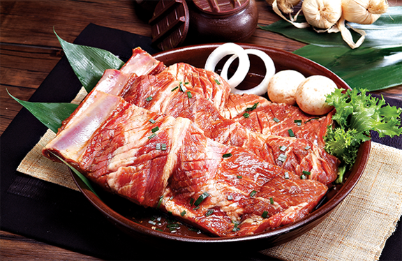
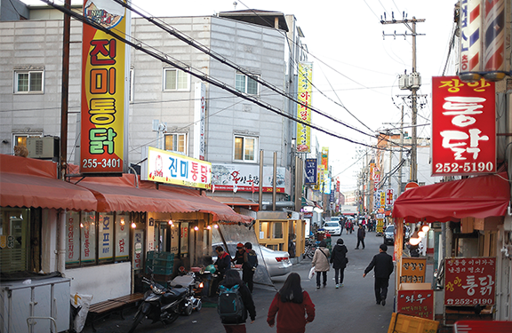
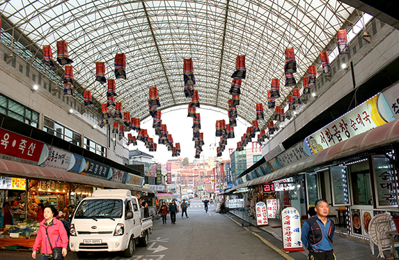
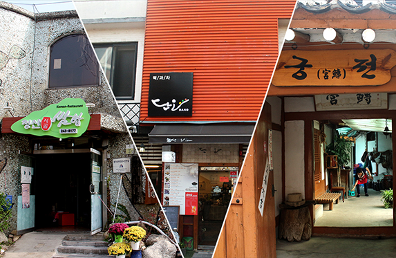

수원갈비
수원하면 단연 '갈비'가 으뜸!
전국을 넘어 세계에 그 맛을 알리고 있는 수원갈비는 다른 지방의 갈비보다 크고 푸짐하여 육질이 부드럽고 육즙이 풍부해 맛이 매우 좋습니다.
은은한 숯불에 구워 먹으면 입 안 가득 고기 고유의 향과 고소한 식감이 전해져 수원 양념갈비의 참맛을 제대로 즐길 수 있습니다.

수원 통닭거리
낮에는 수원화성 관광, 밤에는 수원 통닭거리 방문 수원에서만 유명한 거리가 아니라 전국적으로 유명한 거리가 있습니다.
팔달문 인근 '수원 통닭거리' 입니다.
진미통닭, 용성통닭, 남문통닭, 매향통닭, 장안통닭, 중앙치킨타운은 지금까지 수 십년 통닭의 맛을 지키며 수원 통닭거리의 명성을 만든 일등공신입니다.

수원 순대타운
수원 지동시장 먹자골목 안에 30~40년 전통을 자랑하는 순대집들이 모여 있는 순대 타운이 있습니다.
신선하고 좋은 재료로 만들어 냄새 없이 깔끔한 맛과 푸짐한 양으로 수원지역은 물론, 외지에서도 일부러 찾아 올 만큼 유명세를 타고 있습니다.
부담 없고 편안한 분위기에서 쫄깃하고 담백한 다양한 순대요리를 맛볼 수 있습니다.
청년푸드트레일러
특색 있는 수원의 전통시장이 야간에도 활성화될 수 있도록 ‘청년창업 푸드트레일러 ZONE’이 있는 문화야시장으로 운영하여
다양한 먹거리를 제공하고 젊은 세대를 전통시장에 끌어들여 전통시장의 활기를 되찾아줄 프로젝트입니다.
또한, 취업난을 겪는 청년들에게 창업의 기회까지 제공하는 일석이조 사업입니다.

먹거리 탐방
씹고 뜯고 맛보고 즐기는 수원 왕갈비
수원화성, 행궁정갈비, 연포갈비, 수원갈비스토리, 보신갈비
어머니가 생각나는 한식
청산시골쌈밥, 사랑방손님과 어머니, 화성옥 한정식, 호남회관 참게장백반, 청학동칼 국수, 한봉석할머니 순두부, 궁전한정식
궁칼국수, 식당 주는대로, 시골집 우렁이쌈밥 다양한 만두, 요리 그리고 분식
코끼리만두, 수원만두, 정애네 손만두 어묵, 아자아자분식